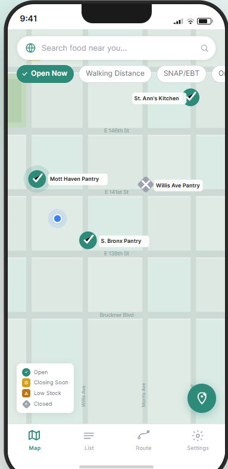

Tools & Approach
Figma
Primary prototyping tool. All three task flows were built as interactive Figma prototypes with component libraries, auto-layout, and clickable connections between screens. Prototype link: available in the repository.
Phase 2 → Phase 3 Refinements
Storyboards from Phase 2 were iterated based on two rounds of feedback: (1) peer presentation feedback — add different shapes to map pins, show languages in their own script; (2) heuristic evaluation — add undo button with timer, simplify listing cards, add icons to buttons.
What Changed from Phase 2
Map pins now use different shapes AND colors for accessibility. Language picker shows scripts (Español not "Spanish"). Confirmation screen has a prominent "Undo my update" button with a 5-minute countdown. Listing cards are simplified with icons on action buttons.
Task 1 — Check If a Nearby Pantry Is Open
Phase 2 feedback applied: pins now use different shapes AND colors (green circle ✓ = open, orange square ! = low stock, red diamond ✗ = closed) so colorblind users can also distinguish them. Legend card always visible on map home.

Shape + color pins · floating legend · "Open Now," "Walking Distance," "SNAP/EBT" filter pills · no login screen · + FAB button for quick updates

Resource name · "Open until 7:00 PM" badge · "Verified 9 min ago by a community member" · 0.3 mi walk · SNAP/EBT accepted · weekly hours · Get Directions + Update Status buttons with icons

Turn-by-turn walking directions · street names shown on map · estimated time (10 min walk) · "Open" status badge visible at bottom · Start Navigation button
All nearby resources as scrollable cards · status badge · distance · SNAP tag · community note preview · "5 resources found" count
Task 2 — Switch App Language
Phase 2 feedback applied: language names now shown in their own script (Español, Français, Kreyòl ayisyen, 中文, etc.). Haitian Creole added given NYC's Haitian community. "Skip — continue in English" option added so users are never trapped on the screen.

8 languages with own-script names · country flag codes · English translation below each · "Continue" disabled until selection · "Skip — continue in English" at top
"Buscar comida cerca de ti..." · filter pills: "Abierto Ahora," "A pie," "SNAP/EBT," "En mi ruta" · pin legend in Spanish
"3 recursos encontrados" · "Banco de Alimentos Mission" · status: Abierto/Cerrando pronto/Cerrado · community note: "Queda poca verdura fresca — hace 5 min"
"Despensa Mott Haven" · "Abierta hasta las 7:00 PM" · "Confirmado por la comunidad · hace 23 min" · "Cómo llegar" · "Actualizar estado"
Task 3 — Submit a Real-Time Status Update
Phase 2 feedback applied: "Undo my update" is now a clearly visible outlined button (not a small gray link) with a 5-minute countdown timer — "Undo available for 4:56." Clicking undo returns you to the quick-tap status menu to select the correct status.
"Update Status" primary button · "Verified 22 min ago — tap to update" timestamp · status shown: Fresh Produce Available · no login prompt anywhere
"What's the status right now?" · 4 options with shape + color icons: Open ✓, Closing Soon ⏰, Closed ✗, Out of Fresh Produce △ · "Posted anonymously — no account needed" · Submit Update (disabled until selection)
Green checkmark · "Update Shared!" · "Your neighbors can now see this." · "This listing now shows: Out of Fresh Produce" · prominent "Undo my update" button · "Undo available for 4:56" countdown · Done button
"¿Cuál es el estado ahora?" · "Abierto / Cerrando pronto / Cerrado / Sin productos frescos" · "¡Actualización compartida!" · "Deshacer mi actualización" · countdown in Spanish